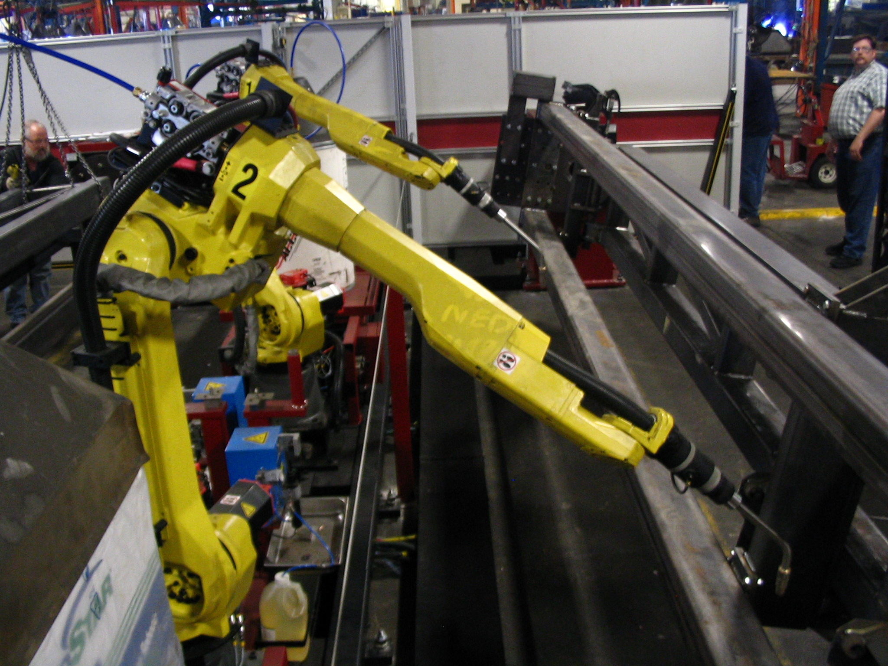

Do we really know what a robot is?
When asked to imagine any kind of robot, people often picture a humanoid from a science-fiction movie, with a metallic voice and clumsy movements.
In reality, we interact with robots more often than we realize, and most of the robots we deal with have nothing human about them. They might be discs that clean the floor, helpers that keep the yard tidy, or a mechanical arm that sorts our mail in a warehouse.

The word “robot” was coined in 1920 in the play “R.U.R.” by the Czech writer Karel Čapek. It comes from the Czech word “robota”, which means “hard labor” or “forced labor”. From the very beginning, therefore, the robot was conceived as something that works for us.
A robot’s work consists of an endless cycle of perception, decisions, and action. The robot perceives its surroundings through sensors, which can be of various types, such as motion, temperature, light, and acoustic sensors, among others. It then interprets what it has detected from the outside world by calculating mathematical values and deciding on its next moves, and based on these calculations, it acts through motors, actuators, and so on.
A robot vacuum cleaner is a good example of this cycle:
- It perceives using sensors that detect collisions, obstacles, and steps.
- It decides where to go, which areas it has already cleaned, and when to return to recharge.
- It acts using wheels and brushes.
We can tell if it’s truly a robot by distinguishing it from two similar things:
- A simple automation: for example a washing machine, which follows a set program.
- Purely software-based artificial intelligence: such as a chatbot, which “thinks” but doesn’t have a body.
For example, try asking yourself whether the following examples can truly be defined as “robots”:
- The food processor: it has sensors (scale, temperature) and motors, but it follows fixed, step-by-step recipes. It’s closer to a washing machine than to a robot.
- Animatronics at theme parks: they have a body, move realistically, and seem alive, but they always repeat the same sequence. The public perceives them as robots, but they neither perceive nor decide anything.
- The pacemaker: it detects the heartbeat, determines if it’s too slow, and responds with an electrical impulse. It meets all three conditions.
- The Perseverance rover on Mars: a signal from Earth takes several minutes to arrive, so it can’t be controlled in real time like a remote-controlled car. For this reason, it must choose part of its route on its own and avoid rocks.
- The automatic door at the supermarket: it senses and acts, but the “decision” is fixed (there’s someone there, so open). It’s more of a reflex than a choice, and a true decision is needed, not just a sensor connected to a motor.
- The elevator: it receives calls from multiple floors and decides in which order to serve them. Some modern systems even use AI to predict traffic during peak hours.
- Remote-controlled drone: it has sensors and motors, but the pilot is the one who makes the decisions. It’s only half a robot.
The line between robots and non-robots isn’t always clear, but one question always helps:
does the machine make decisions based on what it perceives, or does it simply repeat what it has been programmed to do?
An AI chatbot can explain how to hold a glass, but it has never actually held one. That’s the difference between an AI and a robot. In the real world, if an AI makes a mistake, it can cause real damage to its surroundings. When an intelligence has a body and experiences the consequences of its actions, we refer to it as embodied AI.
Essentially, three things change:
- There’s no Ctrl+Z: if a chatbot makes a mistake, it simply re-reads or regenerates its response. If a robot makes a mistake, it might break something or bump into a person.
- Time is real: a robot can’t take tens of seconds to think when a situation requires a quick reflex.
- Sensors aren’t perfect: a camera can be blinded by the sun, or a distance sensor can misread a shiny surface, so the robot must make decisions even with incomplete information.
A robot, therefore, is not defined by its appearance, but by what it does: it perceives, decides, and acts in a world that does not forgive mistakes, does not wait, and cannot be precisely measured. But how do you program a machine to cope with all this uncertainty? For decades, the answer was simple: you didn’t.